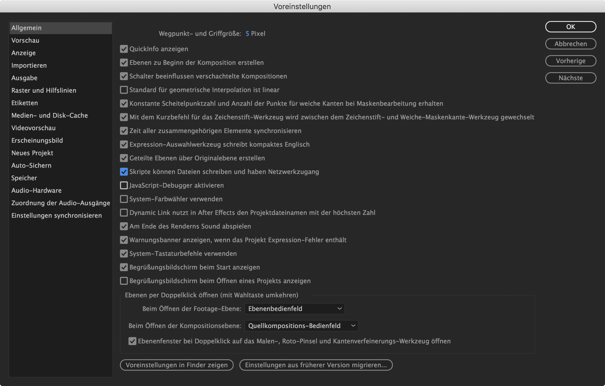

Getting Started¶
Table of Contents
Quick Start¶
Before you can start using the BpmSlicer script you need to set the checkbox of the following setting to true.
After Effects -> Preferences -> General -> Allow Scripts To Write Files And Access Network
(Skripte können Dateien schreiben und haben Netwerkzugang)
